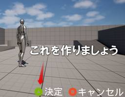

historia Inc – 株式会社ヒストリア
https://historia.co.jp
ゲームの企画・開発・制作協力の株式会社ヒストリアです。UE4やVRの最先端技術を使ってPlayStation®4などのコンシューマーゲームやアーケードゲーム、デジタルコンテンツを創出し、人生観を変えるような体験を提供します。
フィード
【SLASHH：UEFN】キミは何階層まで到達できるか！？ 本格連続ボスバトル『DRAGON COLISEUM』を本日リリース！
historia Inc – 株式会社ヒストリア
フォートナイト内で遊べるドラゴンボスラッシュ『DRAGON COLISEUM』を本日リリースしました。 SLASHHのUEFNタイトル第七弾となります。ぜひプレイしてみてください。 マップコード：859 […]The post 【SLASHH：UEFN】キミは何階層まで到達できるか！？ 本格連続ボスバトル『DRAGON COLISEUM』を本日リリース！ first appeared on historia Inc - 株式会社ヒストリア.
2日前

[UE5] EKeys::Virtual_Acceptを使ってマルチプラットフォーム対応のキーガイドを作ってみよう！
historia Inc – 株式会社ヒストリア
執筆バージョン: Unreal Engine 5.5 みんな！ ゲームをリリースしたいかー！ 家庭用ゲーム機でもゲームをリリースしたいかー！ プラットフォーマーのチェックは怖くないかー！ というわけで(？)、今回はEKe […]The post [UE5] EKeys::Virtual_Acceptを使ってマルチプラットフォーム対応のキーガイドを作ってみよう！ first appeared on historia Inc - 株式会社ヒストリア.
3日前

[UE5] UE5ぷちコン 映像編6th 受賞作品発表！
historia Inc – 株式会社ヒストリア
UE5ぷちコン 映像編6th 受賞作品が決定！ Unreal Engine学習向けコンテストUE5ぷちコンの番外編である映像編コンテスト！ 今回は全71作品が集まりました！ たくさんのご応募ありがとうございました！ 今回 […]The post [UE5] UE5ぷちコン 映像編6th 受賞作品発表！ first appeared on historia Inc - 株式会社ヒストリア.
8日前
[UE5] UE5ぷちコン 映像編5th 受賞作品発表！
historia Inc – 株式会社ヒストリア
UE5ぷちコン 映像編5th 受賞作品が決定！ Unreal Engine学習向けコンテストUE5ぷちコンの番外編である映像編コンテスト！ 今回は全72作品が集まりました！ たくさんのご応募ありがとうございました！ 今回 […]The post [UE5] UE5ぷちコン 映像編5th 受賞作品発表！ first appeared on historia Inc - 株式会社ヒストリア.
9日前
[UE5]UMG Animationを再生するための関数について
historia Inc – 株式会社ヒストリア
執筆バージョン: Unreal Engine 5.5 こんにちは！ 今回はUMGでアニメーションを再生するための関数についてまとめていきます、良ければ確認用にお使いください！ UE4時代から実装されている再生停止 […]The post [UE5]UMG Animationを再生するための関数について first appeared on historia Inc - 株式会社ヒストリア.
10日前
[UE5]AnimNodeの補間処理をBlueprintで使用する
historia Inc – 株式会社ヒストリア
執筆バージョン: Unreal Engine 5.5 今回はAnimNodeで使用されている補間処理をBlueprintで使用する方法について説明していきたいと思います。 指定した値や機能のOn/OFFの状態をもとに時間 […]The post [UE5]AnimNodeの補間処理をBlueprintで使用する first appeared on historia Inc - 株式会社ヒストリア.
17日前
【予告】Unreal Engine 5 学習向け作品制作コンテスト「第23回UE5ぷちコン」を2月14日（金）より開催します！
historia Inc – 株式会社ヒストリア
２、３日でサクッと作ってサクッと応募！ “第23回UE5ぷちコン”開催決定！ 開催期間：2025年2月14日(金)～2025年4月6日(日)(4月7日(月)AM10:00)まで！ UE5ぷちコンは、株式会社 […]The post 【予告】Unreal Engine 5 学習向け作品制作コンテスト「第23回UE5ぷちコン」を2月14日（金）より開催します！ first appeared on historia Inc - 株式会社ヒストリア.
22日前
[UE5]ノード不要！10秒でジェットパックを作る
historia Inc – 株式会社ヒストリア
執筆バージョン: Unreal Engine 5.5 今回はサードパーソンテンプレートを使用し、 「10秒」でジェットパック（ジャンプボタン長押しでフワフワ浮くやつ）を作ってみたいと思います。 「BP_Th […]The post [UE5]ノード不要！10秒でジェットパックを作る first appeared on historia Inc - 株式会社ヒストリア.
24日前
[UE5]UE5ぷちコン映像編6th 応募作品公開！その4
historia Inc – 株式会社ヒストリア
UE5ぷちコン映像編5thのエントリー作品一覧ページです。 今回は全部で71作品集まりました！！ 応募いただいた皆さま、ありがとうございます！！ ※コンテストの告知ページはこちらです。 UE5ぷちコン映像編5th 応募作 […]The post [UE5]UE5ぷちコン映像編6th 応募作品公開！その4 first appeared on historia Inc - 株式会社ヒストリア.
25日前
[UE5]UE5ぷちコン映像編6th 応募作品公開！その3
historia Inc – 株式会社ヒストリア
UE5ぷちコン映像編5thのエントリー作品一覧ページです。 今回は全部で71作品集まりました！！ 応募いただいた皆さま、ありがとうございます！！ ※コンテストの告知ページはこちらです。 UE5ぷちコン映像編5th 応募作 […]The post [UE5]UE5ぷちコン映像編6th 応募作品公開！その3 first appeared on historia Inc - 株式会社ヒストリア.
25日前